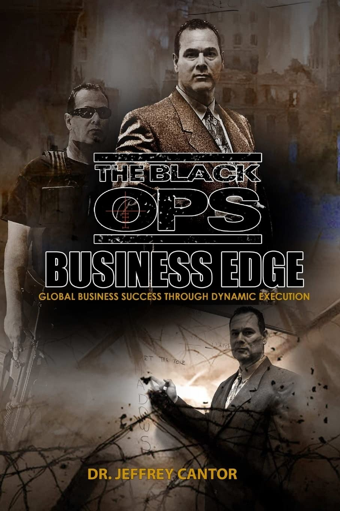

From Operator to Educator & Visionary:
Building a Tactical Legacy
The Operator Turned Visionary
Dr. Jeff Cantor came to us with something rare: decades of real-world tactical expertise, multiple bestselling books on operational tradecraft, and a vision to transform security training from military-exclusive to internationally accessible.
The challenge? Take world-class tactical knowledge and build two distinct educational ecosystems that would each serve different markets—one for hands-on tactical professionals, one for aspiring Defense Coaches.
The solution required brand strategy, digital architecture, content design, book covers, training materials, video production, and a complete visual identity system that communicated authority, expertise, and accessibility across both platforms.

Platform One: Cantor Tactical
The Mission: A direct, no-compromise training platform for professionals who need real tactical skills: law enforcement, security professionals, military-adjacent operators, and serious civilians.
Our Work:
- Brand identity & positioning strategy
- Website architecture & UX design
- Course landing page systems
- Testimonial strategy & client showcasing
- Email funnel design

Platform Two: Mission Ready Global Academy
The Vision: A comprehensive certification and coaching business where aspiring Defense Coaches could learn to build their own security and protection consulting practices—20 modular courses, business training, mentorship, and affiliate ecosystem.
Our Work:
- Educational platform UX & information architecture
- 20-module curriculum presentation & visual hierarchy
- Business training materials & content design
- Certification program branding
- Affiliate program materials
- Course launch sequences
Editorial Design & Book Covers
Part of the ecosystem includes professional book cover design and training material layouts — each one communicating tactical credibility and expert knowledge.
The Integrated Ecosystem
Both platforms needed to work together while staying visually & strategically distinct:
Content & Educational Materials
eBooks, PDFs, training manuals, video scripts, module outlines—all designed for clarity, authority, and professional delivery.
Book Covers & Publications
Professional cover designs for tactical treatises, methodology guides, and thought leadership pieces—each one communicating expert knowledge.
Tactical Branding
Visual systems that communicate precision, competence, and real-world credibility across both discrete platforms and integrated touchpoints.
Ecosystem Integration
A unified visual language where both Cantor Tactical and Mission Ready Academy reinforce each other—building a complete tactical & educational brand.
The Scope of Complexity
This wasn't a website refresh. This was architecture.
We needed to create information hierarchies that served different audiences simultaneously: practitioners seeking specific technical training on one side, aspiring entrepreneurs seeking business knowledge on the other. Both under one identity ecosystem. Both teaching real confidence. Both backed by decades of field expertise.
Every visual decision communicated: This is professional. This is proven. This is real.
The Result: A Complete Tactical Ecosystem
Two distinct platforms. One cohesive brand. Completely functional, legally compliant, and visually authoritative.
Cantor Tactical became the tip of the spear for tactical training. Mission Ready Academy became the launchpad for a new generation of Defense Coach entrepreneurs. Both platforms grew to serve thousands of students and professionals.
Books got published. Courses got filled. Affiliates enrolled. Communities formed. The expertise translated across media, devices, and markets—all held together by a visual identity system that said one thing clearly: "This knowledge is real. This person knows. You're in expert hands."
What The Dr. Cantor Project Demonstrates
At GiordanoTec, the Dr. Jeff Cantor project proved we can handle complex, multi-tiered brand ecosystems:
Multi-Platform Architecture
Building distinct platforms that work together without competing—one visual language supporting different market strategies.
Information Design at Scale
Making complex educational content (20+ modules, hundreds of pages) feel organized, navigable, and never overwhelming.
Editorial Design
Book covers. Training PDFs. Certification materials. We don't just design websites—we design complete communications ecosystems.
Authority Through Design
Making expertise visible. Every design decision communicates credibility, precision, and real-world competence.
Business Model Translation
Understanding complex business models (certification + affiliates + live training + online courses) and designing systems that support them visually and functionally.
Complete Visual Systems
Not just websites. Color systems. Typography hierarchies. Iconography. Button systems. Responsive design. Print materials. Video templates. Everything connected.
You have complex
and we build clarity.
Whether you're scaling a single-founder expertise into a multi-platform business, or building educational ecosystems that support hundreds of students across continents, we design systems that work.
The organizations tackling the hardest problems need the most thoughtful design. Let's talk.
DISCUSS YOUR PROJECT